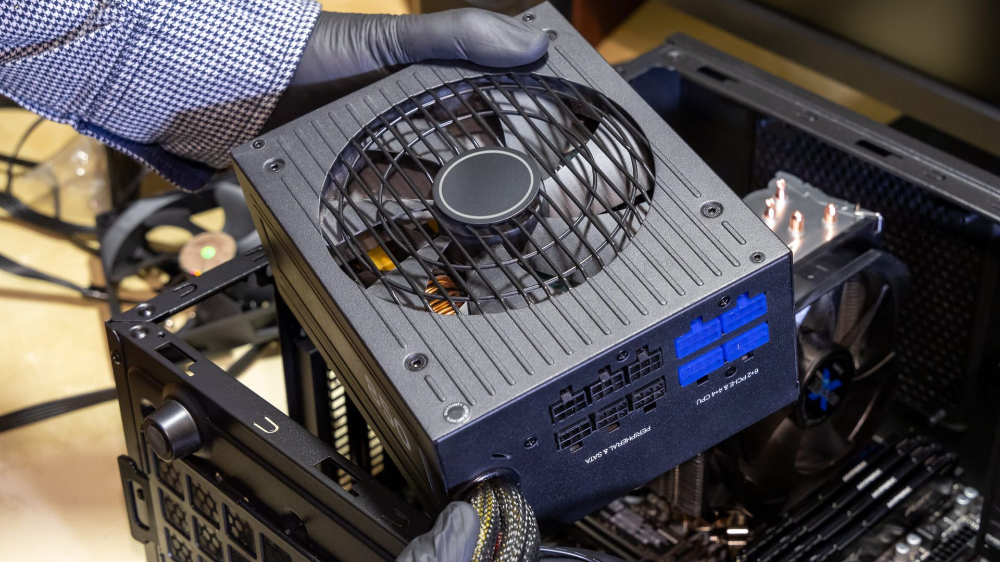
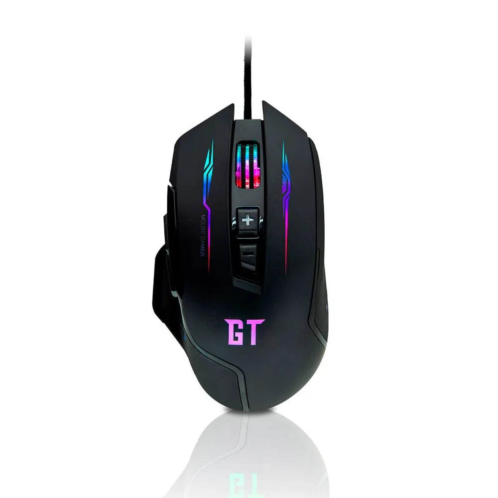

O que é microcomputadores?
O microcomputador é um conjunto de artifícios eletrônicos capazes de realizar processamento de dados, ou seja, é utilizado para processar informações. E é composto por duas partes distintas: Software e Hardware.
Exemplos de microcumpatadores: Desktop – um microcomputador de mesa, com monitor, mouse, teclado, caixas de som, e a caixa onde fica a CPU, placa-mãe, processador, entre outras peças.
O que são componentes internos?
Componentes internos: são as peças que se conectam entre si para que o computador funcione. Dispositivos de armazenamento secundário: são os componentes responsáveis por armazenar os dados de forma permanente no computador.
Exemplos de componentes internos: placa mãe, memória, processador, HD,

O que é CPU?
CPU é a sigla em inglês para Unidade Central de Processamento, o componente do computador que concentra todas as principais operações que permitem a seu PC, celular, tablet ou videogame a funcionar. Não é exagero, portanto, se referir à CPU como o “cérebro” desses dispositivos.
Exemplos de CPU:Todos os tipos de dispositivos usam uma CPU, incluindo desktops, laptops e tablets, smartphones e até mesmo seu aparelho de televisão de tela plana. Dois dos fabricantes mais populares de CPU são a Intel e a AMD. Exemplos de processadores atuais da Intel incluem Core i3, Core i5 e Core i7

O que é Armazenamento?
Armazenar significa guardar ou estocar qualquer coisa para posterior uso. Armazenamento também é a tradução de storage, termo em inglês que descreve espaços como self-storages, embalagens para guardar objetos ou sistemas para armazenar dados de computadores, celulares e outros dispositivos.
Exemplos de Armazenamento: Atualmente existem dois tipos de armazenamento em memória. São eles: -Armazenamento Temporário e; -Armazenamento Permanente.
O que é memória?
A memória é compreendida, em diversos campos da Psicologia, como um local de armazenamento, em que as informações ficam guardadas e, quando há necessidade, recuperadas de forma quase literal.
Exemplos de memória: sensorial, de curto prazo e de longo prazo.28 de jul. de 2016
O que é fonte de alimentação?
As fontes de alimentação possuem função principal de transformar a corrente elétrica da rede, que chega em uma voltagem alta, para uma voltagem menor, que é a indicada para o hardware do computador. Geralmente a rede elétrica.
Exemplos fonte de alimentação:fontes de alimentação reguladas linearmente, fontes de alimentação comutadas e fontes de alimentação não reguladas.
O que é componetes externos ?
Os componentes externos do computador são representados por: Monitor: Trata-de um dispositivo de saída que é responsável por gerar imagem para o usuário. Teclado: Trata-se de um dispositivo de entrada que é responsável por enviar informações para o computador. ... Gabinete: ... Mouse:.
Exemplos de componentes externos:monitor,teclado,mouse...
O que é teclado ?
Dispositivo para codificar dados mediante o acionamento de teclas, efetuando uma operação de entrada de dados em um equipamento eletrônico.
O teclado é uma das principais ferramentas que usamos para interagir e introduzir dados no computador. A maioria dos teclados contam com pelo menos 5 grupos de teclas.

O que é monitor de vídeo?
Um monitor é um dispositivo de saída do computador, cuja função é transmitir informação ao utilizador através da imagem. Porém são poucas as pessoas que se interessam por sua historia. Na década de 1950, a televisão ainda era novidade. Os computadores ocupavam vários metros quadrados, e eram utilizados cartões perfurados para armazenar, e papeis impressos para exibir os dados.
Exemplos fonte de monitor de vídeo:LCD. OLED. LED. Twisted Nematic (TN) Vertical Alignment (VA) In-Plane Switching (IPS)

O que é mouse ?
O mouse faz parte dos periféricos do seu computador e é a parte que no permite interagir com os objetos que aparecem na tela através de um cursor que podemos ver no monitor. .
Atualmente, os dois tipos mais comuns são os mouses ópticos ou a laser.
O que é impressora?
Periférico de saída de dados (output) que permite obter uma cópia em papel de dados contidos no computador. As impressoras são distinguidas quanto ao tipo de tecnologia usada na impressão. Existem impressoras de impacto e impressoras sem impacto, estas deixam marcas sem tocar no papel.
As impressoras são importantes periféricos disponíveis para serem utilizados em uma conexão com um computador (ou até mesmo com uma rede de computadores). Sendo um meio de saída, tem-se como principais funções a impressão de textos, gráficos e outras sugestões, bem como digitalizar e xerocar documentos.

O que é plotter ?
É a máquina usada pra fazer impressões grandes e com bastante qualidade, como mapas, imagens pra quadros e plantas de arquitetura! E o mais legal é que ela consegue imprimir em diferentes tipos de superfície, como adesivo plástico e tecido.
lotter. Existem dois tipos de plotter, os de corte e os de impressão.
O que é scanerr?
É um instrumento de captura, utilizado para digitalizar documentos, transformando documentos de papel em uma imagem digital. Além de facilitar a digitalização de documentos, o equipamento não tem um custo muito elevado.Exemplos de scanner:Scanner de mesa. É o formato mais tradicional de scanner. ... Scanner de Impressoras Multifuncionais. ... Scanner sheet-feed. ... Scanner portátil.
O que é Gabinete ?
Na informática, o gabinete de computador, também conhecido como case, caixa, chassis, carcaça ou torre, é o compartimento que contém a maioria dos componentes de um computador. Um case de computador, às vezes, é referido metonimicamente como CPU, referindo-se a um componente situado dentro da caixa
Exemplos: ATX. Este padrão foi introduzido pela Intel no mercado de tecnologia em 1995, como sucessor do AT. ... Mini ITX. ... Tower Case. ... Mid-Tower Case. ... Gabinete para Mini ITX.
O que é Web cam?
Webcam ou câmera web é uma câmera de vídeo de baixo custo que capta imagens e que as transfere para um computador. Pode ser usada para videoconferência, monitoramento de ambientes, produção de vídeo e imagens para edição, entre outras aplicações
Logitech. C922 Pro Stream. Logitech. BRIO. Logitech. C270. Multilaser. WC050. Microsoft. Webcam Cinema.
O que é Caixas de som?
É o sistema mais simples de reprodução sonora, pode ser mono, quando todos os sons são equalizados em 1 mesmo canal, ou estéreo quando divide-se em duas saídas, pela direita e esquerda.
Exemplo: JBL. GO2. JBL. GO 3. JBL. Charge 5. LG. XBOOM GO PL5. i2GO. Essential Sound Go.
O que é microfone ?
Os microfones são equipamentos que transformam energia sonora em energia elétrica, e isso ocorre por meio de processos de indução eletromagnética. Os microfones possuem a finalidade de transformar ondas sonoras em sinais elétricos, que serão dirigidos para amplificadores, gravadores ou algum outro tipo de equipamento.
Exemplos:Microfones dinâmicos (Dynamic Microphones) Microfones condensadores de cápsula larga (Large Diaphragm Condenser Microphone) Microfones condensadores de cápsula pequena (Small Diaphragm Condenser Microphone) Microfones de fita (Ribbon Microphones)

O que é head set ?
Headset, também conhecido como fone operador, fone de cabeça, headfone ou handsfree é um conjunto formado por um fone de ouvido com controle de volume e um microfone acoplado para utilização em computadores multimídia e sistemas de telemarketing, devido à facilidade e praticidade que ele possui.
Os headsets se dividem em dois tipos gerais: os 2.0 (estéreo) e os 5.1 e 7.1 (surround). Os estéreo são aqueles com duas saídas de som, e mantém o áudio "chapado", com todos os sons se confundindo nas mesmas caixas.
O que é interfaces de entrada e saida ?
As interfaces de entrada e saída são responsáveis pela conexão entre as várias partes de um sistema computacional baseado na arquitetura de Von-Neumann,é um software armazenado na placa-mãe do computador e que é usado pelo microprocessador para iniciar o sistema computacional assim que o computador é ligado.
São exemplos de unidades de entrada de um computador: microfone, teclado, mouse, scanner, leitor de código de barras, máquina fotográfica digital, webcam, joystick e outros acessórios de jogos. São exemplos de unidades de saída de um computador: monitor, caixas de som, impressora e outros.
O que é interface sem fios?
Nessa tecnologia, a comunicação de dados é realizada por meio de ondas eletromagnéticas, como frequências de rádio, infravermelho e satélite, ao invés de cabos e fios.
Blocos de construção da tecnologia sem fio. RFID. Produtos. NFC. Produtos. Bluetooth. Produtos. ZigBee. Produtos. Wi-Fi. Produtos. Celular. Produtos. SigFox. Produtos.
O que é áudio ?
Áudio é um termo que vem do idioma inglês, embora seu antecedente etimológico mais distante seja encontrado no latim. O conceito de áudio é usado para nomear a técnica que permite gravar, transmitir e reproduzir sons.
MP3. O formato de áudio mais popular é MP3, porque entrega qualidade e tem uma taxa de compressão que o torna bem reduzido. ... WMA. O WMA foi criado pela Microsoft como um formato de áudio padrão do Microsoft Windows Media Player. ... WAV. ... PCM. ... FLAC.
O que é rede (ethernet) ?
A rede Ethernet cria um sistema de comunicação local interconectado por cabos, sejam coaxiais, trançados ou de fibra ótica, e equipamentos como roteadores e switches, que permitem o compartilhamento de dados e recursos, como impressoras, scanners ou dispositivos de todos os tipos.
Fast Ethernet – transmite informações a uma taxa entre 10 e 100 Mbps (megabits por segundo), com uso indicado de fibra óptica; Gigabit Ethernet – faz a transmissão de dados, preferencialmente por fibra óptica, em velocidade ainda maior: até 1 Gbps (gigabit por segundo), sendo dez vezes mais rápida que a Fast Ethernet.
O que é vga?
é um dispositivo que assegura uma conexão entre dois computadores. Um com saída VGA, sinal analógico, com outro com entrada HDMI, capaz de transmitir sinal digitalizado.
os cabos VGA podem ter dois tipos de conexão: “macho” e “fêmea”. Isso se deve pela estrutura de encaixe, repleta de pinos fino que precisam ajustar perfeitamente. Por este motivo, umas das extremidades do encaixe terá os pinos, sendo chamada de macho.
O que é Hdmi?
é um conector desenvolvido para compartilhar dados de vídeos e áudio entre dispositivos. É uma tecnologia que deve ser disponibilizada nos aparelhos eletrônicos diversos, como monitores, notebooks, computadores, TVs, projetores e muito mais.
O HDMI tipo D — Micro-HDMI — consegue ser ainda mais diminuto que o HDMI tipo C: o conector mede apenas 5,83 mm x 2,20 mm, portanto, tem tamanho semelhante ao de um conector USB-C, por exemplo. Por ser tão compacto, o HDMI tipo D é adequado a smartphones ou câmeras digitais compactas, por exemplo.
O que é Usb?
um tipo de tecnologia que permite a conexão de periféricos sem a necessidade de desligar o computador, além de transmitir e armazenar dados.
USB4 2.0. O USB4 2.0, anunciado em setembro de 2022, pode atingir velocidade de até 80 GB/s usando os atuais cabos USB-C, o que é o dobro do USB4 1.0, que atinge velocidade de até 40 GB/s. O novo padrão traz retrocompatibilidade com as gerações anteriores (até o USB 2.0) e com o Thunderbolt 3.28
O que é Grandezas Elétricas?
Grandeza é tudo aquilo que pode ser mensurado, ou seja, que pode ser medido ou contado! As grandezas nos dão a possibilidade de obter características baseadas em informações numéricas e/ou geométricas, sendo que todas essas grandezas são padronizadas pelo Sistema Internacional de Unidades (SI).
Corrente elétrica: Ampere (A) – Unidade básica. Tensão elétrica: Volts (V) Resistência elétrica: Ohm (Ω) Potência elétrica: Watt (W)
O que é potência elétrica?
Potência elétrica é a quantidade de energia elétrica que é fornecida a um circuito elétrico a cada segundo ou, ainda, a quantidade de energia que esse circuito converte em outras formas de energia, também a cada segundo. A unidade de medida da potência elétrica, de acordo com o Sistema Internacional de Unidades (SI), é o watt (W), que equivale a joules por segundo (J/s).
Potência Ativa - usada no sistema. Potência Reativa - desperdiçada pelo sistema. Potência Aparente - potência total que o sistema tira da rede de alimentação (soma da potência ativa com a potência reativa)
O que é tensão elétrica?
Tensão elétrica é a força elétrica que provoca a circulação de corrente, que faz as cargas elétricas entrarem em movimento. Quando entre dois corpos, ou entre dois pontos, existe uma diferença de quantidade de cargas, então dizemos que temos uma diferença de potencial elétrico (d.d.p) ou uma tensão elétrica.21 de out. de 2020
Existem dois tipos de corrente elétrica: corrente elétrica contínua e corrente elétrica alternada. Apesar de ambas tratarem-se de uma movimentação de cargas elétricas, são fundamentalmente diferentes.
O que é capacidade de armazenamento ?
A capacidade de armazenamento refere-se à quantidade específica de armazenamento de dados que um dispositivo ou sistema pode acomodar. Essa medição crítica é comum na TI voltada para o consumidor e também no design de sistemas corporativos ou outros sistemas maiores para funcionar corretamente.
Por meios magnéticos. Exemplos: Disco Rígido. Por meios ópticos. Exemplos: CD, DVD. Por meios eletrônicos (SSDs) - chip - Exemplos: cartão de memória, pen drive.
O que é bit ?
O termo Bit, que é proveniente das palavras dígito binário, ou “BInary digiT”, é a menor unidade de medida de transmissão de dados usada na computação e informática. Um bit tem um único valor, zero ou um , verdadeiro ou falso, ou neste contexto quaisquer dois valores mutuamente exclusivos.
Assim, 1 kilobit representa 1.024 bits e assim por diante: 1 kilobit (Kb) = 1.024 bits. 1 megabit (Mb) = 1.024 kilobits. 1 gigabit (Gb) = 1.024 megabits. ... Outros exemplos: 26 Kb/s = 26 kilobits por segundo. 12 Mb/s = 12 megabits por segundo. 3 Gb/s = 3 gigabits por segundo. 20 de fev. de 2022
O que é byte ?
O Byte é a reunião de oito Bits. Esta reunião recebe o nome de Octeto e é utilizada para dar instruções aos computadores. Ambos, Bits e Bytes, ocorrem numa escala imperceptível em nosso cotidiano.
kilobyte (KB) = 1.024 bytes. 1 megabyte (MB) = 1.048.576 bytes. 1 gigabyte (GB) = 1.073.741.824 bytes. 1 terabyte (TB) = 1.099.511.627.776 bytes. 1 petabyte (PB) = 1.125.899.906.842.624 bytes.

O que é multiplos ?
Para verificar se um número é múltiplo de outro, basta encontrar um número inteiro de modo que a multiplicação entre eles resulte no primeiro número. Exemplos: a) 35 é múltiplo de 7, pois 35 é igual a 7 multiplicado pelo número inteiro 5. b) 63 é múltiplo de 21, pois 63 é igual a 21 multiplicado pelo número inteiro 3.
O conjunto dos múltiplos de um número é, portanto, um conjunto infinito. Por exemplo, os múltiplos de 12 obtêm-se multiplicando 12 por 1, 2, 3, 4, 5, 6, ... , k, ... (k natural qualquer).

O que é frequência?
A frequência é definida como o número de voltas realizadas por um objeto em movimento circular em um intervalo de tempo determinado. Também pode ser definida como a quantidade de ondas geradas em um tempo específico. Uma unidade de medida muito comum para a frequência é a rotação por minuto (r.p.m).
A frequência absoluta de 11 é 3, pois 11 aparece 3 vezes na amostra. A frequência relativa de 11 é 0.17, corresponde a divisão 3/18, já que 3 é a frequência absoluta e 18 é o número total de observações.
O que é hert ?
O hertz (símbolo Hz) é a unidade de medida de frequência derivada do Sistema Internacional (SI), a qual expressa, em termos de ciclos por segundo,[1] que descreve qualquer evento periódico, oscilações (vibrações) ou rotações por segundo (.
O hertz aplica-se à descrição de qualquer evento periódico. Por exemplo, o coração de um humano saudável em repouso bate a aproximadamente 1,2 Hz (1,2 batidas por segundo)
O que é largura de banda?
Ela indica a quantidade máxima de dados que podem trafegar em uma conexão à Internet em um determinado período de tempo. A largura de banda é medida em bits por segundo (bps), embora normalmente seja mais comum utilizar múltiplos, como Kbps, ou Mbps.
a sua conexão for de 5Mbps, significa que você pode receber até 5 megabits de dados por segundo.
O que é capacidade do canal ?
capacidade do canal é uma métrica muito usada para a quantidade máxima de tráfego ou sinal que pode se mover sobre um canal de infraestrutura específico. É útil em ciência da computação, em engenharia elétrica e em outras disciplinas que avaliam a capacidade de um canal ou canal.
usar largura de 40 MHz pode comprometer o desempenho da rede e fazer o sinal Wi-Fi ficar muito fraco. Se seu roteador é dual band e opera na faixa de 5 GHz,
O que é bit/seg?
Bit (simplificação para dígito binário, "Binary digit" em inglês) é a menor unidade de informação que pode ser armazenada ou transmitida e que pode assumir somente dois valores: 0 ou 1, verdadeiro ou falso e assim por diante.
Toda sequência de bits pode ser vista como um número natural em notação binária : o número natural é a soma das potências de 2 que correspondem aos bits 1 .
O que é taxa de transferência ?
Velocidade com que os dados são transmitidos de um dispositivo para outro. As taxas de transferência são normalmente medidas em bits ou bytes (ou múltiplos destes).
O valor de 2022, referente ao processo de transferência de veículo inclui: Taxa de transferência, recolhida pelo número de RENAVAM de acordo com o licenciamento anual: Caso o licenciamento esteja pago,
o que é tráfego no canal?
O tráfego de um negócio está relacionado à atração e aquisição de novos visitantes e possíveis clientes em um site. Para que você obtenha sucesso na estratégia de marketing digital é preciso definir o canal de tráfego online que mais faz sentido com o seu negócio